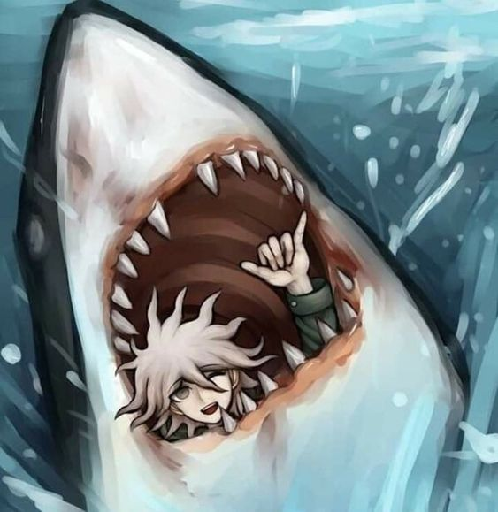
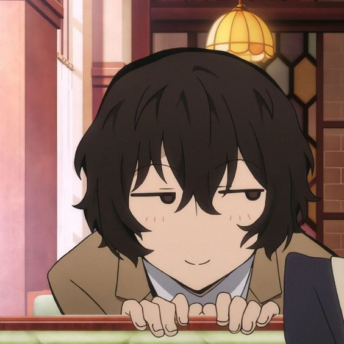
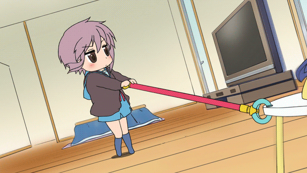
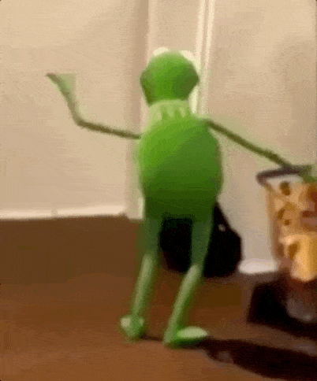
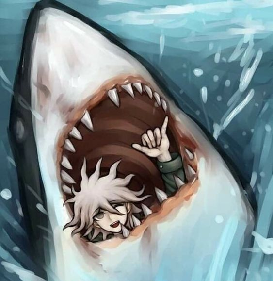
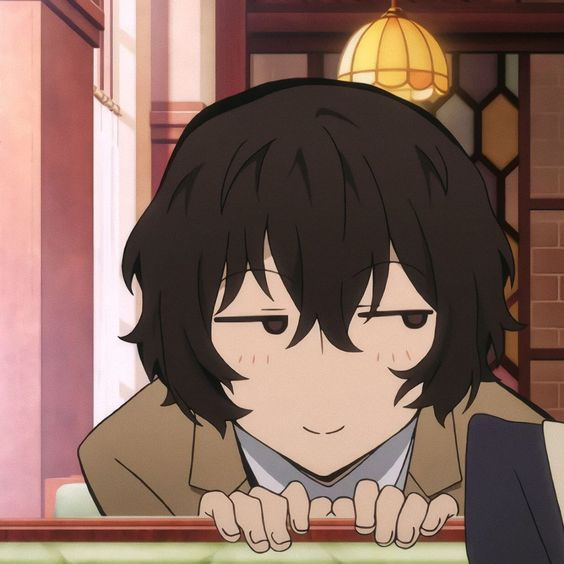
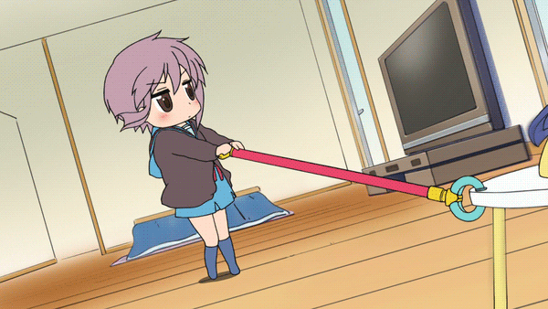
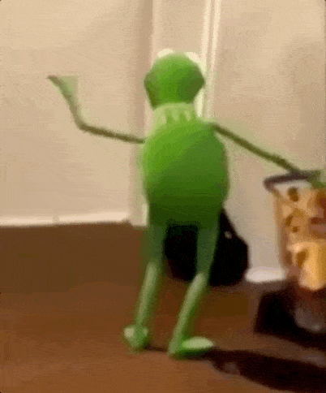
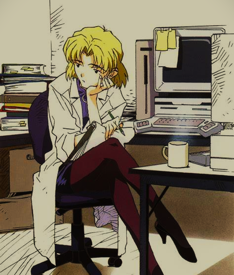

{kind=link}
 Shoutout a Pluto por ser god.
Shoutout a Pluto por ser god.  







Hola, soy Belén Ungari, una joven uruguaya de 21 años. Me apasiona la tecnología y el desarrollo de software. Actualmente me encuentro ampliando mis conocimientos en programación y estoy siempre en búsqueda de nuevos desafíos y oportunidades para aprender y crecer en el mundo de la tecnología.
Soy estudiante de Ingeniería de Software en la Facultad de Ingeniería , apasionado por la tecnología y el desarrollo de software. Actualmente, estoy cursando el programa "Jóvenes a Programar", donde estoy ampliando mis conocimientos en programación y  tecnología. Durante mi formación académica, he adquirido experiencia en lenguajes como C++ y Pascal. Aunque no tengo experiencia laboral previa, estoy ansioso por aplicar mis habilidades y aprender en un entorno profesional. Estoy motivado por los desafíos y el aprendizaje continuo en el mundo de la programación y el desarrollo de software.
Shoutout a Pluto por ser god.